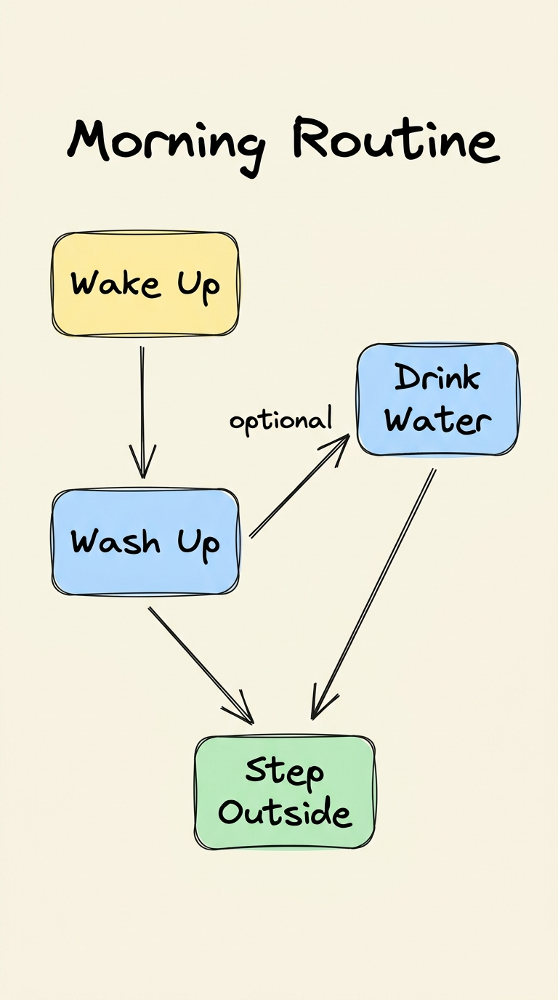
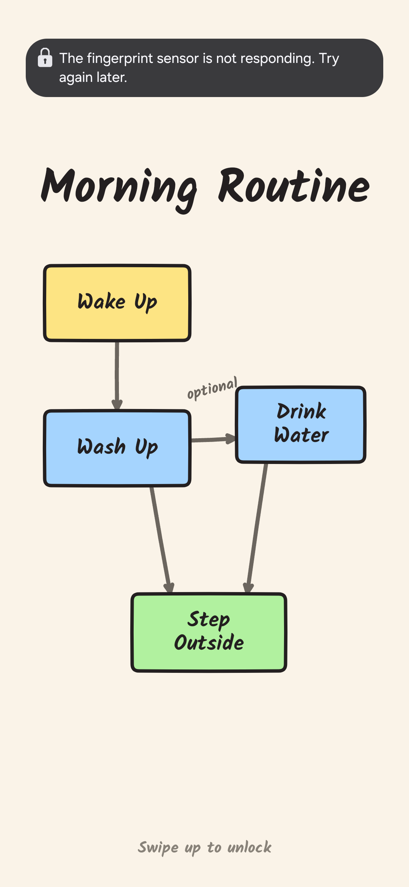
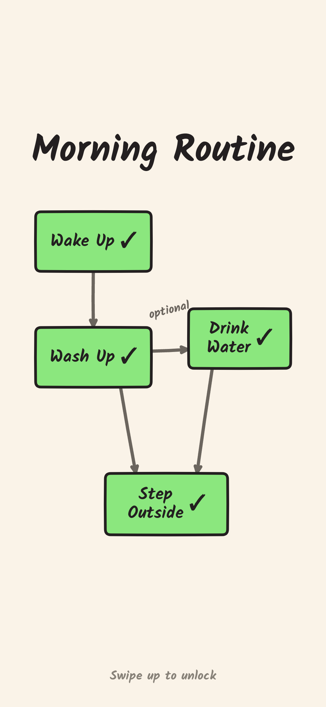

Complete your morning routine before unlocking.
The moment you touch your phone in the morning, social notifications fight for your dopamine. Morning Routine replaces your system lockscreen clock with a clear, hand-drawn flowchart. Hold to complete tasks, swipe up when you're done.
Try the interactive live card
Morning Routine
Try holding any card below ↓
Water
Outside
Live interactive simulator · Hold to fill, long-press to reset
Designed to protect your focus
Standard lockscreens immediately expose you to unread messages and notifications. Morning Routine intercepts your morning wake-up with an intentional physical protocol.
Display Turns On
When you press the power button or double tap your Samsung screen, LockscreenService activates and renders the routine overlay on top of the keyguard.
Hold to Confirm
Accidental taps while half-asleep are ignored. Holding any task card for 650ms smoothly fills it with green and gives a haptic pulse before locking in the checkmark ✓.
Branching Logic
The diagram outlines flexible paths: after washing up, you can take the direct path outside or follow the optional path to drink a glass of water first.
Swipe to Unlock
When you are ready to use your phone, a natural upward swipe smoothly dismisses the overlay and immediately triggers your standard One UI PIN or fingerprint sensor.
From sketch concept to real device
Side-by-side comparison between the original Gemini sketch board and the native Jetpack Compose lockscreen running on a physical Samsung Galaxy.

Original hand-drawn design prompt inspired by Excalidraw

Physical Samsung Galaxy screen capture with fresh tasks

All 4 tasks completed with checkmarks and green fill
Built for speed, reliability, and zero battery drain
Instead of relying on heavy third-party lockscreen replacements that break system security, Morning Routine uses Android's native Keyguard Window APIs. Your phone remains 100% encrypted and protected by Samsung Knox.
- ✓ Immersive Window Flags: Covers One UI lockscreen clock, widgets, and status icons cleanly.
- ✓ Hardware Canvas Rendering: Arrows and sketchy borders drawn directly on hardware-accelerated Compose Canvas.
- ✓ Strictly Offline: No network permissions requested in AndroidManifest. Zero analytics or background trackers.
Take back your morning clarity today.
Prebuilt signed APK available on GitHub. Open source under the MIT License.